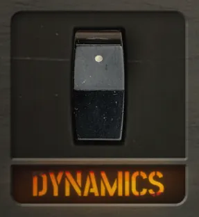
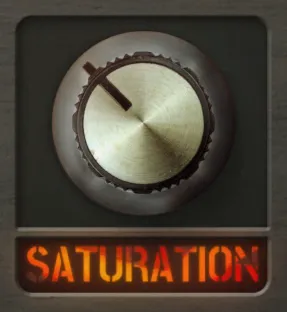
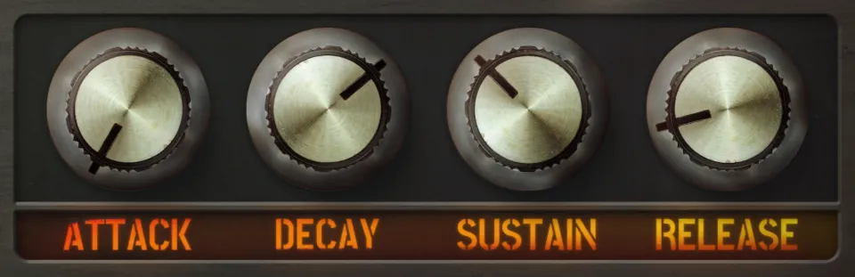
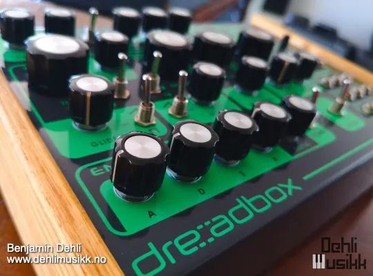
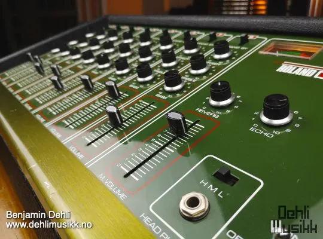
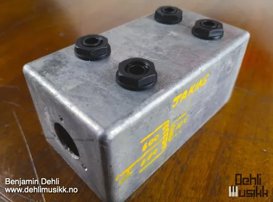
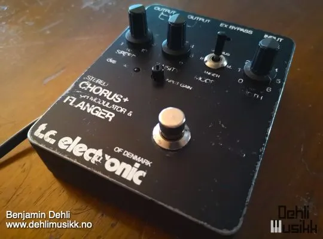

Video
A demonstration of the SubC library for Decent Sampler.
Sub bass sample library (SubC) — Watch on YouTube
Included formats
- VST3 (macOS)
- AU (macOS)
- Standalone application (macOS)
- Decent Sampler (macOS, Windows and Linux)
The plugin version is currently released for macOS only. Windows and Linux versions are planned. Until then, the Decent Sampler version covers those platforms.
The plugin version
The plugin is a self-contained instrument, available as VST3, AU and Standalone. Samples, graphics and impulse responses are all embedded in the plugin itself, losslessly compressed, so there are no external files to install or locate. Only the samples for the selected preset are loaded into memory, and a fresh instance lets you choose which preset to load before anything is decoded.
The plugin has all the controls and features from the Decent Sampler version,including MIDI learn, the master volume fader with output meter, value readouts for the knobs and full DAW automation. On top of that, the plugin version adds:
- Drift wheels next to the pitch and modulation wheels, adding a subtle random pitch and volume drift to each voice.
- A velocity curve setting in the settings menu.
The Decent Sampler version
This version of SubC is an instrument preset / sample library for Decent Sampler. If you're new to Decent Sampler, I recommend checking out this guide first.
Technical specification
| Sample rate | Bit depth | Channels | Number of files | File size | |
|---|---|---|---|---|---|
| Mono samples | 48 kHz | 24 bit | 1 (mono) | 108 | 327.30 MB |
| Stereo samples | 48 kHz | 24 bit | 2 (stereo) | 108 | 654.20 MB |
Instrument presets
- SubC
- Preset with mono samples
- SubC (Stereo)
- Preset with stereo samples
User Interface
Dynamics

Determines whether the velocity should affect the volume and distortion.
Saturation

The saturation knob blends between the clean samples and the distorted samples. The clean samples are recorded through a Roland PA-120 mixer. The distorted/saturated samples are additionally sent through a Hairball Audio FET/RACK (1176 compressor) and a transformer and diode saturator. The stereo samples are the same as the mono samples, but sent through a TC Electronic SCF Stereo Chorus Flanger in vibrato mode. This gives a much wider sound, but less bottom end when summed to mono.
Envelope

Shape your sound precisely with the Attack, Decay, Sustain, and Release parameters. Whether you desire a punchy, staccato tone or a smooth, lingering ambiance, the ADSR envelope allows you to tailor the dynamics to your liking.
Equipment used

Dreadbox Erebus v2
Roland PA-120 Hairball Audio FET/RACK Revision D
Hairball Audio FET/RACK Revision D
Alex Franklinos Stereo Transformer Saturator
TC Electronic SCF Stereo Chorus Flanger
Release notes
Version 2.1.02026-08-01
The changes in this release apply to the plugin version only. The DecentSampler version is unchanged.
- Added a translucent overlay graphic on top of the interface.
- Keys that are hovered or held on the keyboard are now shaded in a neutral way instead of turning yellow:
- White keys turn darker.
- Black keys turn brighter.
- The computer keyboard keeps playing notes even while you adjust a control with the mouse.
Version 2.0.02026-07-19
- Added a plugin version. See the section "The plugin version".
- Fixed the groupIndex in the filter binding.
- Fixed a typo in a keyboard color code.
Version 1.0.02024-03-31
- First version released
About this repository
This repository contains the source for both the Decent Sampler library (the DecentSampler folder) and the plugin version. The plugin is a thin wrapper around the shared Dehli Musikk sampler engine, and a converter translates the Decent Sampler library into the engine's native preset format at build time. The audio files are not part of this repository, since the samples are a paid product. The full version is available from store.dehlimusikk.no.